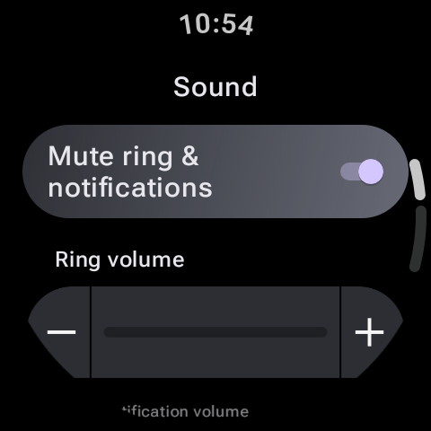

Smartwatches promise to help us stay connected, but they can quickly turn into a source of constant distraction. When your wrist vibrates every time a promotional email arrives, a news app pushes a headline, or a spam group chat updates, your productivity and focus suffer. The constant buzzing causes sensory fatigue and fragments your attention span.
Fortunately, Wear OS provides granular, powerful control over your notifications. By setting up strict filters and silencing the noise, you can transform your watch from a stressful distraction into a peaceful assistant that only alerts you to critical matters. Here is your guide to mastering Wear OS notification management.

The Golden Rule: Silence on Watch, Silence on Phone
One of the most annoying aspects of owning a smartwatch is double-buzzing: hearing your phone ring on your desk, followed immediately by your watch vibrating on your wrist. You can configure Wear OS to intelligently disable phone notifications while you are wearing your watch.
How to Silence Your Phone While Wearing Your Watch:
- Open your smartwatch companion app on your phone (e.g. Galaxy Wearable or Pixel Watch app).
- Navigate to Watch Settings > Notifications.
- Tap on Mute notifications on phone (or Show alerts only on watch).
- Toggle this feature on. Now, as long as your watch detects it is on your wrist, your phone will remain silent, eliminating double alerts.
Filtering: Choosing Which Apps Can Buzz Your Wrist
A default Wear OS installation forwards alerts from every single app installed on your phone. To establish calm, you should whitelist only crucial communications (like calls, calendar alerts, and direct messaging channels) and banish social media feed updates and shopping apps.
The 90/10 Rule for Smartwatch Calm
Examine your notifications list and disable 90% of them. If an alert doesn't require immediate attention or a response within 5 minutes, it doesn't belong on your wrist. Save email, news, and social media notifications for when you choose to open your phone or computer.
How to Filter Notifications by App:
- In your phone's wearable companion app, go to Notifications > App notifications.
- You will see a list of apps installed on your phone.
- Toggle off the switch for any application that does not require real-time attention. Pay special attention to shopping apps, game notifications, and email clients.
- For messaging apps like WhatsApp or Slack, you can go into those individual app settings on your phone to mute group chat notifications specifically while keeping direct messages active.
Preventing Screen Wake and Sound Triggers
Even if you filter apps, having your screen light up with text previews can be disruptive during face-to-face meetings or dinners. You can keep your screen off and restrict text previews for privacy.
| Setting Name | What it Does | How to Configure |
|---|---|---|
| Turn on screen | Wakes the display immediately when a new notification arrives. | Turn this OFF in Notification Settings to prevent visual distractions. |
| Show previews | Displays detailed sender name and message content on the screen. | Set to "Hide details" or "Show only when tapped" for privacy. |
| Read notifications aloud | Speaks incoming notifications when headphones are connected. | Turn this OFF to prevent sudden audio interruptions during calls. |
Using Focus Modes: DND and Theater Mode
When you need absolute, uninterrupted focus during a deep-work block, a presentation, or a movie, manually adjusting individual app settings is impractical. Instead, learn to utilize Wear OS system states:
- Do Not Disturb (DND): Blocks all vibrations and screen wake triggers from incoming notifications. You can sync DND status between your phone and watch under advanced settings so that toggling it on one device silences both.
- Theater Mode: Silences alerts, disables the Always-On Display (AOD), and prevents the screen from turning on when you raise your wrist or tap the screen. The display will only wake if you press a physical side button.
Access both modes quickly by swiping down from your main watch face to open the Quick Settings panel, then tapping the corresponding icons (the circle-minus for DND, and the drama masks for Theater Mode).
Final Thoughts
Your smartwatch is a tool that should serve you, not dictate your attention. By muting your phone while wearing the watch, disabling notifications for non-essential apps, and hiding message previews, you can cultivate a focused, quiet digital lifestyle. Take control of your settings today and enjoy a quieter, calmer wrist!